21種類・256パターンを調査。通常武器の計算上の予算超過は0件。数値変更はしていません。
★6の古代武器は全て除外。個別の管理者カスタム装備・個人セーブは参照しない。未排出レア度と旧保存品の効果も含めた定義上の比較。 基礎ATK20/50/100/200、SPD10、敵DEF0/20/60。正解した通常攻撃1回の期待値。同一効果は重複せず、他スロットの効果なし。敵HP十分、HP吸収/回避/MP節約/スキル/レイド倍率はこのダメージ値に含めない。
通常・限定・イベント武器のみで調査。数値と効果SPは規定予算内だった。ただし、割合効果の価格が実際の強さを十分に表しているかは別問題。★6の古代武器は調査対象に含めない。
★3はcost2・攻撃+0でも合計攻撃+15%が有効。★4はcost3・攻撃+3。6SPで基礎攻撃や他装備分にも効くため、高攻撃のキャラほど割安。現行の通常ガチャでは★3〜4に新規付与しないが、旧保存品では起こり得る。
会心ならcost5・攻撃+11、ちからのかごならcost5・攻撃+7。会心は2SPで通常攻撃+10ポイント、スキル+8ポイント。合計攻撃100・敵DEF0なら通常会心分だけで期待値約+10/回。ちからのかごは6SPで合計攻撃+15%。どちらも武器の加算攻撃だけに作用する効果ではない。
★4はcost15・攻撃+23・素早さ+4、ちからのかご固定。6SPの固定価格で合計攻撃+15%なので、キャラが育つほど割安。ただし武器単体の数値だけで明確な過剰とは断定しない。
せつやくの心得は2SPだが、スキルを繰り返すたびにMPを1節約する。消費MP3のスキルならMP30で10回→15回。長期戦で固定のMP+2より価値が大きくなる。ただし消費MP1のスキルには効果がない。
木の剣★5はcost5・攻撃+1でも、武器分以外を含む与ダメージからHPを吸収する。月影の短剣★5はcost21・攻撃+26・素早さ+7で吸収固定。通常の単発攻撃と多段スキルでは、敵残HPを超えた名目ダメージまで回復計算に入ることを実処理で確認。敵残HP1・名目ダメージ100でHP15回復した。イベントレイドは実際に削ったHP基準で処理が不統一。数値調整より先に確認するべき点。
基礎ATK100・SPD10・敵DEF0の例では、武器なしの通常攻撃期待値105に対し、旧保存の木の剣★3ちからのかごは120.75（cost2）、現行で入手可能な木の剣★5同効果は129.15（cost5）。強い武器だからではなく、低costで全体を強化する効果の組み合わせが突出する。
★5会心付きは攻撃+169・cost84。単発火力は高いが要求コストも高いので、数値の大きさだけで強すぎるとは判定しない。通常・限定武器のエンチャントなし基礎数値だけに、予算を超える突出は見つからなかった。
基礎ATK100・SPD10・敵DEF0、他スロット効果なし、正解した通常攻撃。武器なし期待値105からの増加量をcostで割った値。旧保存品と未排出レア度も含むので、新規排出の強さランキングとは区別してください。
| 武器 | ★ | cost | 効果 | 期待ダメージ | 増加/cost | 旧保存品のみ |
|---|---|---|---|---|---|---|
| 木の剣 | 3 | 2 | 攻撃力+15% | 120.75 | 7.875 | 旧効果付きのみ |
| 木の剣 | 3 | 2 | 会心率+10% | 119.6 | 7.3 | 旧効果付きのみ |
| 木の剣 | 4 | 3 | 攻撃力+15% | 123.9 | 6.3 | 旧効果付きのみ |
| 木の剣 | 4 | 3 | 会心率+10% | 123.05 | 6.017 | 旧効果付きのみ |
| どうの剣 | 3 | 4 | 攻撃力+15% | 126 | 5.25 | 旧効果付きのみ |
| お菓子のサーベル | 1 | 3 | 会心率+10% | 119.6 | 4.867 | |
| かぼちゃの魔剣 | 1 | 3 | 会心率+10% | 119.6 | 4.867 | |
| 木の剣 | 5 | 5 | 攻撃力+15% | 129.15 | 4.83 | |
| どうの剣 | 3 | 4 | 会心率+10% | 124.2 | 4.8 | 旧効果付きのみ |
| 木の剣 | 5 | 5 | 会心率+10% | 127.65 | 4.53 | |
| どうの剣 | 4 | 6 | 攻撃力+15% | 131.25 | 4.375 | 旧効果付きのみ |
| 旅人の軽い剣 | 3 | 6 | 攻撃力+15% | 130.2 | 4.2 | 旧効果付きのみ |
| はがねの剣 | 3 | 6 | 攻撃力+15% | 130.2 | 4.2 | 旧効果付きのみ |
| 星晶の剣 | 3 | 6 | 攻撃力+15% | 130.2 | 4.2 | 旧効果付きのみ |
| どうの剣 | 4 | 6 | 会心率+10% | 129.95 | 4.158 | 旧効果付きのみ |
| 武器 | ★ / 覚醒 | cost | 加算能力 | 効果 | 能力SP＋効果SP / 予算 | 期待ダメージ（同条件） |
|---|---|---|---|---|---|---|
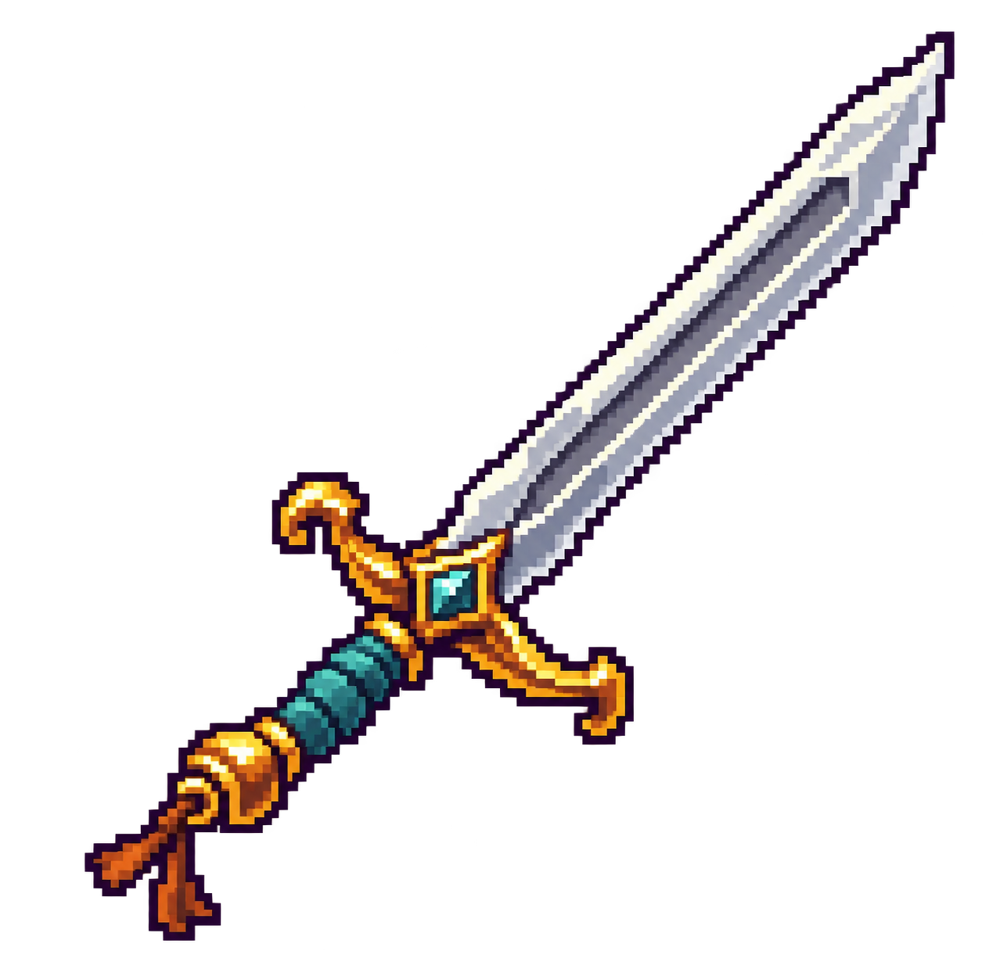 旅人の軽い剣 | 1 | 3 | atk+6 | なし | 6 + 0 / 6 | 37.8 |
旅人の軽い剣 | 2 | 5 | atk+11 | なし | 11 + 0 / 11 | 43.05 |
旅人の軽い剣 | 3 | 6 | atk+14 | なし | 14 + 0 / 14 | 46.2 |
旅人の軽い剣 | 3 | 6 | atk+12 | 会心率+10%旧保存品の効果 | 12 + 2 / 14 | 48.3 |
旅人の軽い剣 | 3 | 6 | atk+12 | 被ダメージ−5%旧保存品の効果 | 12 + 2 / 14 | 44.1 |
旅人の軽い剣 | 3 | 6 | atk+12 | 消費MP−1旧保存品の効果 | 12 + 2 / 14 | 44.1 |
旅人の軽い剣 | 3 | 6 | atk+8 | 攻撃力+15%旧保存品の効果 | 8 + 6 / 14 | 49.35 |
旅人の軽い剣 | 3 | 6 | atk+2 | HP吸収15%旧保存品の効果 | 2 + 12 / 14 | 33.6 |
旅人の軽い剣 | 4 | 9 | atk+21 | なし | 21 + 0 / 21 | 53.55 |
旅人の軽い剣 | 4 | 9 | atk+19 | 会心率+10%旧保存品の効果 | 19 + 2 / 21 | 56.35 |
旅人の軽い剣 | 4 | 9 | atk+19 | 被ダメージ−5%旧保存品の効果 | 19 + 2 / 21 | 51.45 |
旅人の軽い剣 | 4 | 9 | atk+19 | 消費MP−1旧保存品の効果 | 19 + 2 / 21 | 51.45 |
旅人の軽い剣 | 4 | 9 | atk+15 | 攻撃力+15%旧保存品の効果 | 15 + 6 / 21 | 57.75 |
旅人の軽い剣 | 4 | 9 | atk+9 | HP吸収15%旧保存品の効果 | 9 + 12 / 21 | 40.95 |
旅人の軽い剣 | 5 | 13 | atk+27 | 会心率+10% | 27 + 2 / 29 | 65.55 |
旅人の軽い剣 | 5 | 13 | atk+27 | 被ダメージ−5% | 27 + 2 / 29 | 59.85 |
旅人の軽い剣 | 5 | 13 | atk+27 | 消費MP−1 | 27 + 2 / 29 | 59.85 |
旅人の軽い剣 | 5 | 13 | atk+23 | 攻撃力+15% | 23 + 6 / 29 | 67.2 |
旅人の軽い剣 | 5 | 13 | atk+17 | HP吸収15% | 17 + 12 / 29 | 49.35 |
木の剣 | 1 | 1 | atk+2 | なし | 2 + 0 / 2 | 33.6 |
木の剣 | 2 | 2 | atk+5 | なし | 5 + 0 / 5 | 36.75 |
木の剣 | 3 | 2 | atk+6 | なし | 6 + 0 / 6 | 37.8 |
木の剣 | 3 | 2 | atk+4 | 会心率+10%旧保存品の効果 | 4 + 2 / 6 | 39.1 |
木の剣 | 3 | 2 | atk+4 | 被ダメージ−5%旧保存品の効果 | 4 + 2 / 6 | 35.7 |
木の剣 | 3 | 2 | atk+4 | 消費MP−1旧保存品の効果 | 4 + 2 / 6 | 35.7 |
木の剣 | 3 | 2 | 補助専用 | 攻撃力+15%旧保存品の効果 | 0 + 6 / 6 | 38.85 |
木の剣 | 4 | 3 | atk+9 | なし | 9 + 0 / 9 | 40.95 |
木の剣 | 4 | 3 | atk+7 | 会心率+10%旧保存品の効果 | 7 + 2 / 9 | 42.55 |
木の剣 | 4 | 3 | atk+7 | 被ダメージ−5%旧保存品の効果 | 7 + 2 / 9 | 38.85 |
木の剣 | 4 | 3 | atk+7 | 消費MP−1旧保存品の効果 | 7 + 2 / 9 | 38.85 |
木の剣 | 4 | 3 | atk+3 | 攻撃力+15%旧保存品の効果 | 3 + 6 / 9 | 43.05 |
木の剣 | 5 | 5 | atk+11 | 会心率+10% | 11 + 2 / 13 | 47.15 |
木の剣 | 5 | 5 | atk+11 | 被ダメージ−5% | 11 + 2 / 13 | 43.05 |
木の剣 | 5 | 5 | atk+11 | 消費MP−1 | 11 + 2 / 13 | 43.05 |
木の剣 | 5 | 5 | atk+7 | 攻撃力+15% | 7 + 6 / 13 | 48.3 |
木の剣 | 5 | 5 | atk+1 | HP吸収15% | 1 + 12 / 13 | 32.55 |
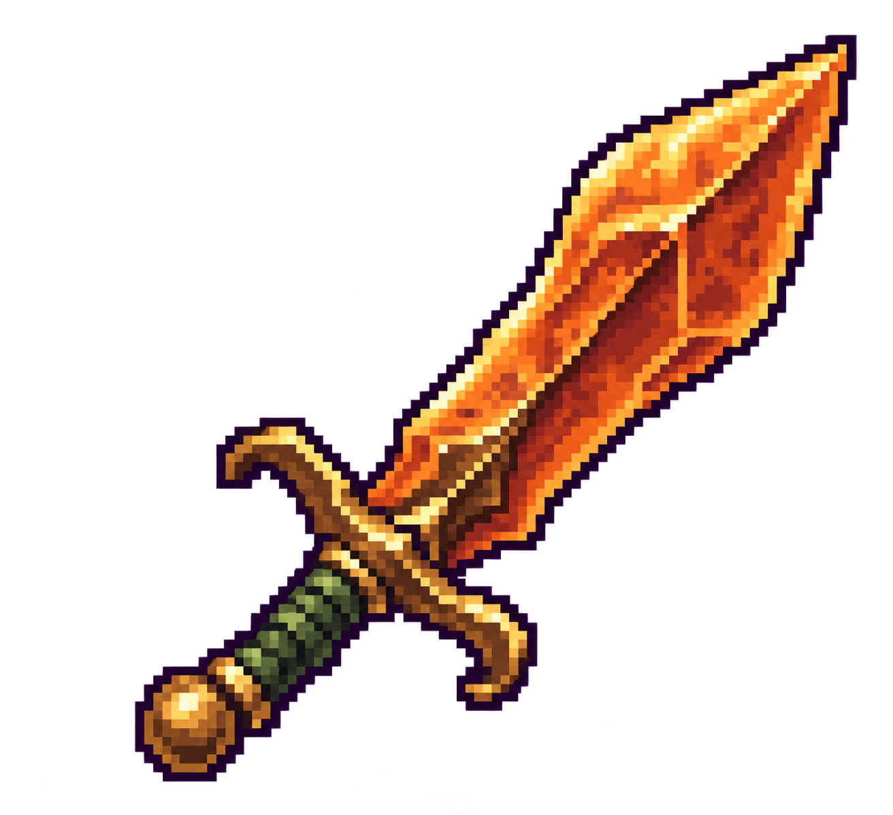 どうの剣 | 1 | 2 | atk+4 | なし | 4 + 0 / 4 | 35.7 |
どうの剣 | 2 | 3 | atk+7 | なし | 7 + 0 / 7 | 38.85 |
どうの剣 | 3 | 4 | atk+10 | なし | 10 + 0 / 10 | 42 |
どうの剣 | 3 | 4 | atk+8 | 会心率+10%旧保存品の効果 | 8 + 2 / 10 | 43.7 |
どうの剣 | 3 | 4 | atk+8 | 被ダメージ−5%旧保存品の効果 | 8 + 2 / 10 | 39.9 |
どうの剣 | 3 | 4 | atk+8 | 消費MP−1旧保存品の効果 | 8 + 2 / 10 | 39.9 |
どうの剣 | 3 | 4 | atk+4 | 攻撃力+15%旧保存品の効果 | 4 + 6 / 10 | 44.1 |
どうの剣 | 4 | 6 | atk+15 | なし | 15 + 0 / 15 | 47.25 |
どうの剣 | 4 | 6 | atk+13 | 会心率+10%旧保存品の効果 | 13 + 2 / 15 | 49.45 |
どうの剣 | 4 | 6 | atk+13 | 被ダメージ−5%旧保存品の効果 | 13 + 2 / 15 | 45.15 |
どうの剣 | 4 | 6 | atk+13 | 消費MP−1旧保存品の効果 | 13 + 2 / 15 | 45.15 |
どうの剣 | 4 | 6 | atk+9 | 攻撃力+15%旧保存品の効果 | 9 + 6 / 15 | 50.4 |
どうの剣 | 4 | 6 | atk+3 | HP吸収15%旧保存品の効果 | 3 + 12 / 15 | 34.65 |
どうの剣 | 5 | 9 | atk+19 | 会心率+10% | 19 + 2 / 21 | 56.35 |
どうの剣 | 5 | 9 | atk+19 | 被ダメージ−5% | 19 + 2 / 21 | 51.45 |
どうの剣 | 5 | 9 | atk+19 | 消費MP−1 | 19 + 2 / 21 | 51.45 |
どうの剣 | 5 | 9 | atk+15 | 攻撃力+15% | 15 + 6 / 21 | 57.75 |
どうの剣 | 5 | 9 | atk+9 | HP吸収15% | 9 + 12 / 21 | 40.95 |
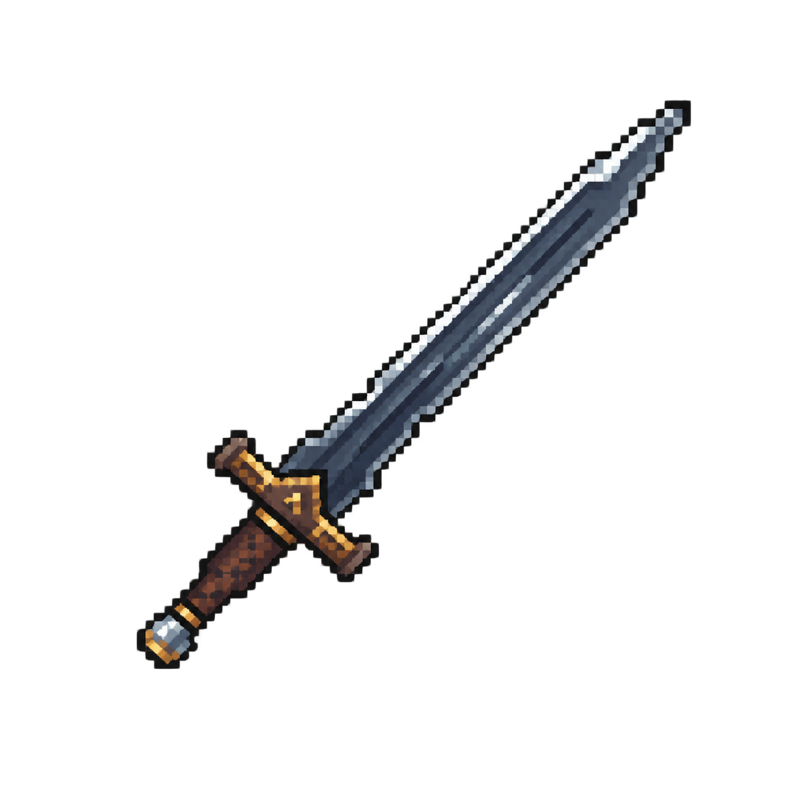 はがねの剣 | 1 | 3 | atk+6 | なし | 6 + 0 / 6 | 37.8 |
はがねの剣 | 2 | 5 | atk+11 | なし | 11 + 0 / 11 | 43.05 |
はがねの剣 | 3 | 6 | atk+14 | なし | 14 + 0 / 14 | 46.2 |
はがねの剣 | 3 | 6 | atk+12 | 会心率+10%旧保存品の効果 | 12 + 2 / 14 | 48.3 |
はがねの剣 | 3 | 6 | atk+12 | 被ダメージ−5%旧保存品の効果 | 12 + 2 / 14 | 44.1 |
はがねの剣 | 3 | 6 | atk+12 | 消費MP−1旧保存品の効果 | 12 + 2 / 14 | 44.1 |
はがねの剣 | 3 | 6 | atk+8 | 攻撃力+15%旧保存品の効果 | 8 + 6 / 14 | 49.35 |
はがねの剣 | 3 | 6 | atk+2 | HP吸収15%旧保存品の効果 | 2 + 12 / 14 | 33.6 |
はがねの剣 | 4 | 9 | atk+21 | なし | 21 + 0 / 21 | 53.55 |
はがねの剣 | 4 | 9 | atk+19 | 会心率+10%旧保存品の効果 | 19 + 2 / 21 | 56.35 |
はがねの剣 | 4 | 9 | atk+19 | 被ダメージ−5%旧保存品の効果 | 19 + 2 / 21 | 51.45 |
はがねの剣 | 4 | 9 | atk+19 | 消費MP−1旧保存品の効果 | 19 + 2 / 21 | 51.45 |
はがねの剣 | 4 | 9 | atk+15 | 攻撃力+15%旧保存品の効果 | 15 + 6 / 21 | 57.75 |
はがねの剣 | 4 | 9 | atk+9 | HP吸収15%旧保存品の効果 | 9 + 12 / 21 | 40.95 |
はがねの剣 | 5 | 13 | atk+27 | 会心率+10% | 27 + 2 / 29 | 65.55 |
はがねの剣 | 5 | 13 | atk+27 | 被ダメージ−5% | 27 + 2 / 29 | 59.85 |
はがねの剣 | 5 | 13 | atk+27 | 消費MP−1 | 27 + 2 / 29 | 59.85 |
はがねの剣 | 5 | 13 | atk+23 | 攻撃力+15% | 23 + 6 / 29 | 67.2 |
はがねの剣 | 5 | 13 | atk+17 | HP吸収15% | 17 + 12 / 29 | 49.35 |
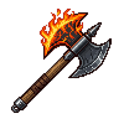 ほのおの斧 | 1 | 4 | atk+8 | なし | 8 + 0 / 8 | 39.9 |
ほのおの斧 | 2 | 6 | atk+13 | なし | 13 + 0 / 13 | 45.15 |
ほのおの斧 | 3 | 8 | atk+18 | なし | 18 + 0 / 18 | 50.4 |
ほのおの斧 | 3 | 8 | atk+16 | 会心率+10%旧保存品の効果 | 16 + 2 / 18 | 52.9 |
ほのおの斧 | 3 | 8 | atk+16 | 被ダメージ−5%旧保存品の効果 | 16 + 2 / 18 | 48.3 |
ほのおの斧 | 3 | 8 | atk+16 | 消費MP−1旧保存品の効果 | 16 + 2 / 18 | 48.3 |
ほのおの斧 | 3 | 8 | atk+12 | 攻撃力+15%旧保存品の効果 | 12 + 6 / 18 | 53.55 |
ほのおの斧 | 3 | 8 | atk+6 | HP吸収15%旧保存品の効果 | 6 + 12 / 18 | 37.8 |
ほのおの斧 | 4 | 12 | atk+27 | なし | 27 + 0 / 27 | 59.85 |
ほのおの斧 | 4 | 12 | atk+25 | 会心率+10%旧保存品の効果 | 25 + 2 / 27 | 63.25 |
ほのおの斧 | 4 | 12 | atk+25 | 被ダメージ−5%旧保存品の効果 | 25 + 2 / 27 | 57.75 |
ほのおの斧 | 4 | 12 | atk+25 | 消費MP−1旧保存品の効果 | 25 + 2 / 27 | 57.75 |
ほのおの斧 | 4 | 12 | atk+21 | 攻撃力+15%旧保存品の効果 | 21 + 6 / 27 | 65.1 |
ほのおの斧 | 4 | 12 | atk+15 | HP吸収15%旧保存品の効果 | 15 + 12 / 27 | 47.25 |
ほのおの斧 | 5 | 17 | atk+35 | 会心率+10% | 35 + 2 / 37 | 74.75 |
ほのおの斧 | 5 | 17 | atk+35 | 被ダメージ−5% | 35 + 2 / 37 | 68.25 |
ほのおの斧 | 5 | 17 | atk+35 | 消費MP−1 | 35 + 2 / 37 | 68.25 |
ほのおの斧 | 5 | 17 | atk+31 | 攻撃力+15% | 31 + 6 / 37 | 76.65 |
ほのおの斧 | 5 | 17 | atk+25 | HP吸収15% | 25 + 12 / 37 | 57.75 |
いなずまの太刀 | 1 | 6 | atk+12 | なし | 12 + 0 / 12 | 44.1 |
いなずまの太刀 | 2 | 9 | atk+19 | なし | 19 + 0 / 19 | 51.45 |
いなずまの太刀 | 3 | 12 | atk+26 | なし | 26 + 0 / 26 | 58.8 |
いなずまの太刀 | 3 | 12 | atk+24 | 会心率+10%旧保存品の効果 | 24 + 2 / 26 | 62.1 |
いなずまの太刀 | 3 | 12 | atk+24 | 被ダメージ−5%旧保存品の効果 | 24 + 2 / 26 | 56.7 |
いなずまの太刀 | 3 | 12 | atk+24 | 消費MP−1旧保存品の効果 | 24 + 2 / 26 | 56.7 |
いなずまの太刀 | 3 | 12 | atk+20 | 攻撃力+15%旧保存品の効果 | 20 + 6 / 26 | 64.05 |
いなずまの太刀 | 3 | 12 | atk+14 | HP吸収15%旧保存品の効果 | 14 + 12 / 26 | 46.2 |
いなずまの太刀 | 4 | 18 | atk+39 | なし | 39 + 0 / 39 | 72.45 |
いなずまの太刀 | 4 | 18 | atk+37 | 会心率+10%旧保存品の効果 | 37 + 2 / 39 | 77.05 |
いなずまの太刀 | 4 | 18 | atk+37 | 被ダメージ−5%旧保存品の効果 | 37 + 2 / 39 | 70.35 |
いなずまの太刀 | 4 | 18 | atk+37 | 消費MP−1旧保存品の効果 | 37 + 2 / 39 | 70.35 |
いなずまの太刀 | 4 | 18 | atk+33 | 攻撃力+15%旧保存品の効果 | 33 + 6 / 39 | 78.75 |
いなずまの太刀 | 4 | 18 | atk+27 | HP吸収15%旧保存品の効果 | 27 + 12 / 39 | 59.85 |
いなずまの太刀 | 5 | 26 | atk+53 | 会心率+10% | 53 + 2 / 55 | 95.45 |
いなずまの太刀 | 5 | 26 | atk+53 | 被ダメージ−5% | 53 + 2 / 55 | 87.15 |
いなずまの太刀 | 5 | 26 | atk+53 | 消費MP−1 | 53 + 2 / 55 | 87.15 |
いなずまの太刀 | 5 | 26 | atk+49 | 攻撃力+15% | 49 + 6 / 55 | 98.7 |
いなずまの太刀 | 5 | 26 | atk+43 | HP吸収15% | 43 + 12 / 55 | 76.65 |
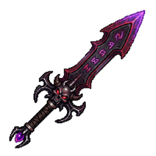 まけんグラム | 1 | 7 | atk+14 | なし | 14 + 0 / 14 | 46.2 |
まけんグラム | 2 | 11 | atk+23 | なし | 23 + 0 / 23 | 55.65 |
まけんグラム | 3 | 14 | atk+30 | なし | 30 + 0 / 30 | 63 |
まけんグラム | 3 | 14 | atk+28 | 会心率+10%旧保存品の効果 | 28 + 2 / 30 | 66.7 |
まけんグラム | 3 | 14 | atk+28 | 被ダメージ−5%旧保存品の効果 | 28 + 2 / 30 | 60.9 |
まけんグラム | 3 | 14 | atk+28 | 消費MP−1旧保存品の効果 | 28 + 2 / 30 | 60.9 |
まけんグラム | 3 | 14 | atk+24 | 攻撃力+15%旧保存品の効果 | 24 + 6 / 30 | 68.25 |
まけんグラム | 3 | 14 | atk+18 | HP吸収15%旧保存品の効果 | 18 + 12 / 30 | 50.4 |
まけんグラム | 4 | 21 | atk+45 | なし | 45 + 0 / 45 | 78.75 |
まけんグラム | 4 | 21 | atk+43 | 会心率+10%旧保存品の効果 | 43 + 2 / 45 | 83.95 |
まけんグラム | 4 | 21 | atk+43 | 被ダメージ−5%旧保存品の効果 | 43 + 2 / 45 | 76.65 |
まけんグラム | 4 | 21 | atk+43 | 消費MP−1旧保存品の効果 | 43 + 2 / 45 | 76.65 |
まけんグラム | 4 | 21 | atk+39 | 攻撃力+15%旧保存品の効果 | 39 + 6 / 45 | 86.1 |
まけんグラム | 4 | 21 | atk+33 | HP吸収15%旧保存品の効果 | 33 + 12 / 45 | 66.15 |
まけんグラム | 5 | 30 | atk+61 | 会心率+10% | 61 + 2 / 63 | 104.65 |
まけんグラム | 5 | 30 | atk+61 | 被ダメージ−5% | 61 + 2 / 63 | 95.55 |
まけんグラム | 5 | 30 | atk+61 | 消費MP−1 | 61 + 2 / 63 | 95.55 |
まけんグラム | 5 | 30 | atk+57 | 攻撃力+15% | 57 + 6 / 63 | 108.15 |
まけんグラム | 5 | 30 | atk+51 | HP吸収15% | 51 + 12 / 63 | 85.05 |
せいけんエクスカリバー | 1 | 10 | atk+20 | なし | 20 + 0 / 20 | 52.5 |
せいけんエクスカリバー | 2 | 15 | atk+31 | なし | 31 + 0 / 31 | 64.05 |
せいけんエクスカリバー | 3 | 20 | atk+42 | なし | 42 + 0 / 42 | 75.6 |
せいけんエクスカリバー | 3 | 20 | atk+40 | 会心率+10%旧保存品の効果 | 40 + 2 / 42 | 80.5 |
せいけんエクスカリバー | 3 | 20 | atk+40 | 被ダメージ−5%旧保存品の効果 | 40 + 2 / 42 | 73.5 |
せいけんエクスカリバー | 3 | 20 | atk+40 | 消費MP−1旧保存品の効果 | 40 + 2 / 42 | 73.5 |
せいけんエクスカリバー | 3 | 20 | atk+36 | 攻撃力+15%旧保存品の効果 | 36 + 6 / 42 | 82.95 |
せいけんエクスカリバー | 3 | 20 | atk+30 | HP吸収15%旧保存品の効果 | 30 + 12 / 42 | 63 |
せいけんエクスカリバー | 4 | 30 | atk+63 | なし | 63 + 0 / 63 | 97.65 |
せいけんエクスカリバー | 4 | 30 | atk+61 | 会心率+10%旧保存品の効果 | 61 + 2 / 63 | 104.65 |
せいけんエクスカリバー | 4 | 30 | atk+61 | 被ダメージ−5%旧保存品の効果 | 61 + 2 / 63 | 95.55 |
せいけんエクスカリバー | 4 | 30 | atk+61 | 消費MP−1旧保存品の効果 | 61 + 2 / 63 | 95.55 |
せいけんエクスカリバー | 4 | 30 | atk+57 | 攻撃力+15%旧保存品の効果 | 57 + 6 / 63 | 108.15 |
せいけんエクスカリバー | 4 | 30 | atk+51 | HP吸収15%旧保存品の効果 | 51 + 12 / 63 | 85.05 |
せいけんエクスカリバー | 5 | 42 | atk+85 | 会心率+10% | 85 + 2 / 87 | 132.25 |
せいけんエクスカリバー | 5 | 42 | atk+85 | 被ダメージ−5% | 85 + 2 / 87 | 120.75 |
せいけんエクスカリバー | 5 | 42 | atk+85 | 消費MP−1 | 85 + 2 / 87 | 120.75 |
せいけんエクスカリバー | 5 | 42 | atk+81 | 攻撃力+15% | 81 + 6 / 87 | 137.55 |
せいけんエクスカリバー | 5 | 42 | atk+75 | HP吸収15% | 75 + 12 / 87 | 110.25 |
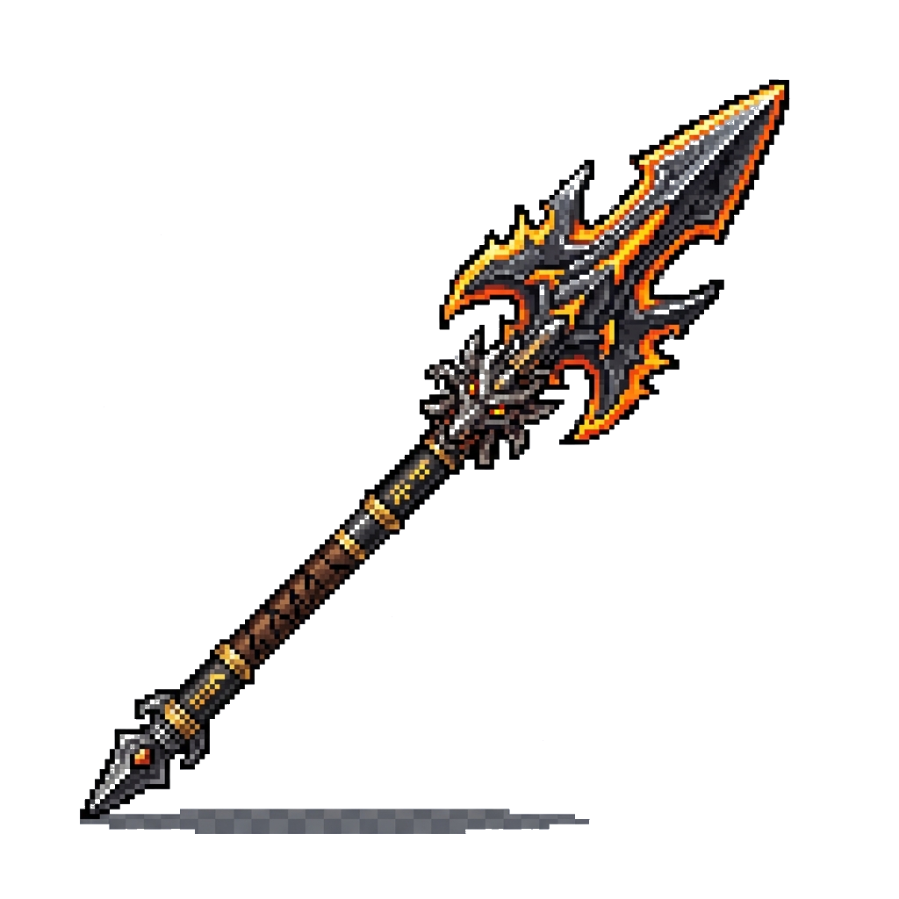 りゅうごろしの槍 | 1 | 12 | atk+24 | なし | 24 + 0 / 24 | 56.7 |
りゅうごろしの槍 | 2 | 18 | atk+37 | なし | 37 + 0 / 37 | 70.35 |
りゅうごろしの槍 | 3 | 24 | atk+50 | なし | 50 + 0 / 50 | 84 |
りゅうごろしの槍 | 3 | 24 | atk+48 | 会心率+10%旧保存品の効果 | 48 + 2 / 50 | 89.7 |
りゅうごろしの槍 | 3 | 24 | atk+48 | 被ダメージ−5%旧保存品の効果 | 48 + 2 / 50 | 81.9 |
りゅうごろしの槍 | 3 | 24 | atk+48 | 消費MP−1旧保存品の効果 | 48 + 2 / 50 | 81.9 |
りゅうごろしの槍 | 3 | 24 | atk+44 | 攻撃力+15%旧保存品の効果 | 44 + 6 / 50 | 92.4 |
りゅうごろしの槍 | 3 | 24 | atk+38 | HP吸収15%旧保存品の効果 | 38 + 12 / 50 | 71.4 |
りゅうごろしの槍 | 4 | 36 | atk+75 | なし | 75 + 0 / 75 | 110.25 |
りゅうごろしの槍 | 4 | 36 | atk+73 | 会心率+10%旧保存品の効果 | 73 + 2 / 75 | 118.45 |
りゅうごろしの槍 | 4 | 36 | atk+73 | 被ダメージ−5%旧保存品の効果 | 73 + 2 / 75 | 108.15 |
りゅうごろしの槍 | 4 | 36 | atk+73 | 消費MP−1旧保存品の効果 | 73 + 2 / 75 | 108.15 |
りゅうごろしの槍 | 4 | 36 | atk+69 | 攻撃力+15%旧保存品の効果 | 69 + 6 / 75 | 122.85 |
りゅうごろしの槍 | 4 | 36 | atk+63 | HP吸収15%旧保存品の効果 | 63 + 12 / 75 | 97.65 |
りゅうごろしの槍 | 5 | 51 | atk+103 | 会心率+10% | 103 + 2 / 105 | 152.95 |
りゅうごろしの槍 | 5 | 51 | atk+103 | 被ダメージ−5% | 103 + 2 / 105 | 139.65 |
りゅうごろしの槍 | 5 | 51 | atk+103 | 消費MP−1 | 103 + 2 / 105 | 139.65 |
りゅうごろしの槍 | 5 | 51 | atk+99 | 攻撃力+15% | 99 + 6 / 105 | 158.55 |
りゅうごろしの槍 | 5 | 51 | atk+93 | HP吸収15% | 93 + 12 / 105 | 129.15 |
🧮かぞえだま | 1 | 1 | 補助専用 | なし | 補助専用 | 31.5 |
🧮かぞえだま | 2 | 2 | 補助専用 | なし | 補助専用 | 31.5 |
🧮かぞえだま | 3 | 2 | 補助専用 | なし | 補助専用 | 31.5 |
🧮かぞえだま | 4 | 3 | 補助専用 | なし | 補助専用 | 31.5 |
🧮かぞえだま | 5 | 5 | 補助専用 | なし | 補助専用 | 31.5 |
魔王の覇剣 | 1 | 20 | atk+40 | なし | 40 + 0 / 40 | 73.5 |
魔王の覇剣 | 2 | 30 | atk+61 | なし | 61 + 0 / 61 | 95.55 |
魔王の覇剣 | 3 | 40 | atk+82 | なし | 82 + 0 / 82 | 117.6 |
魔王の覇剣 | 3 | 40 | atk+80 | 会心率+10%旧保存品の効果 | 80 + 2 / 82 | 126.5 |
魔王の覇剣 | 3 | 40 | atk+80 | 被ダメージ−5%旧保存品の効果 | 80 + 2 / 82 | 115.5 |
魔王の覇剣 | 3 | 40 | atk+80 | 消費MP−1旧保存品の効果 | 80 + 2 / 82 | 115.5 |
魔王の覇剣 | 3 | 40 | atk+76 | 攻撃力+15%旧保存品の効果 | 76 + 6 / 82 | 131.25 |
魔王の覇剣 | 3 | 40 | atk+70 | HP吸収15%旧保存品の効果 | 70 + 12 / 82 | 105 |
魔王の覇剣 | 4 | 60 | atk+123 | なし | 123 + 0 / 123 | 160.65 |
魔王の覇剣 | 4 | 60 | atk+121 | 会心率+10%旧保存品の効果 | 121 + 2 / 123 | 173.65 |
魔王の覇剣 | 4 | 60 | atk+121 | 被ダメージ−5%旧保存品の効果 | 121 + 2 / 123 | 158.55 |
魔王の覇剣 | 4 | 60 | atk+121 | 消費MP−1旧保存品の効果 | 121 + 2 / 123 | 158.55 |
魔王の覇剣 | 4 | 60 | atk+117 | 攻撃力+15%旧保存品の効果 | 117 + 6 / 123 | 180.6 |
魔王の覇剣 | 4 | 60 | atk+111 | HP吸収15%旧保存品の効果 | 111 + 12 / 123 | 148.05 |
魔王の覇剣 | 5 | 84 | atk+169 | 会心率+10% | 169 + 2 / 171 | 228.85 |
魔王の覇剣 | 5 | 84 | atk+169 | 被ダメージ−5% | 169 + 2 / 171 | 208.95 |
魔王の覇剣 | 5 | 84 | atk+169 | 消費MP−1 | 169 + 2 / 171 | 208.95 |
魔王の覇剣 | 5 | 84 | atk+165 | 攻撃力+15% | 165 + 6 / 171 | 238.35 |
魔王の覇剣 | 5 | 84 | atk+159 | HP吸収15% | 159 + 12 / 171 | 198.45 |
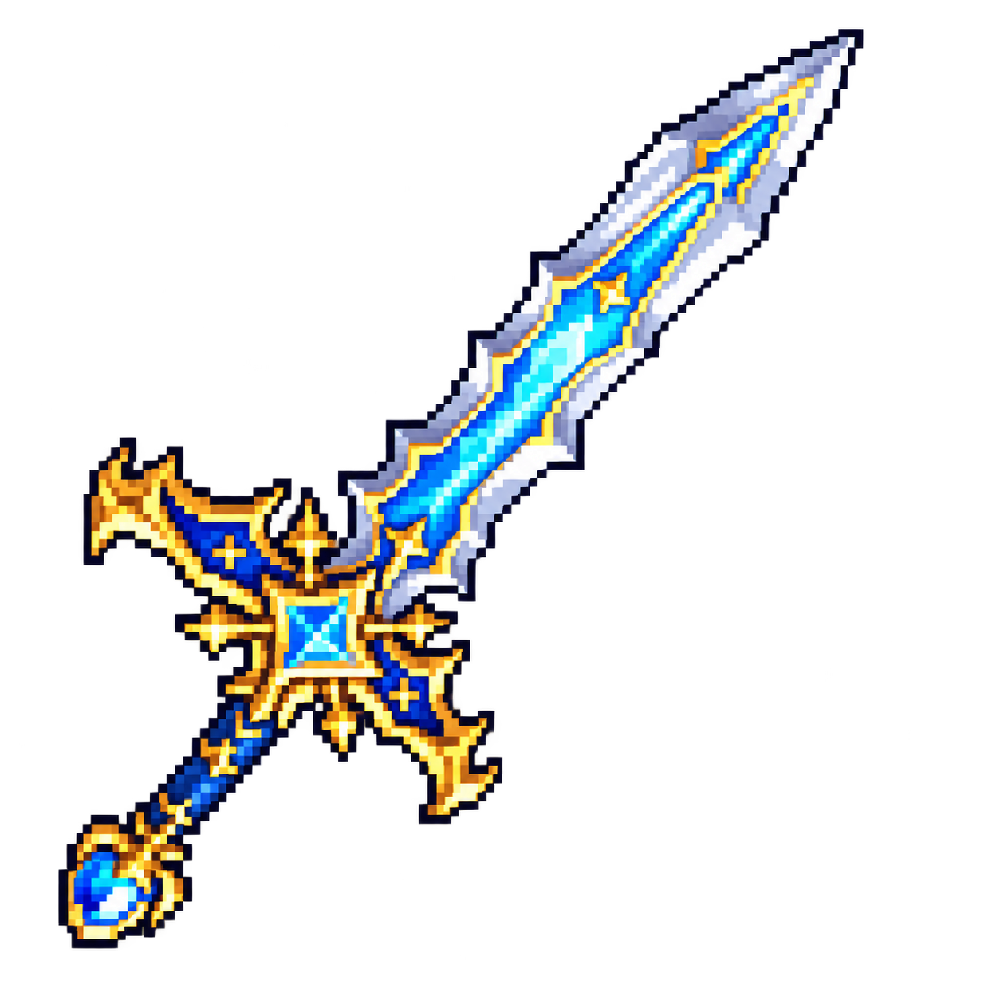 星晶の剣 | 1 | 3 | atk+6 | なし | 6 + 0 / 6 | 37.8 |
星晶の剣 | 2 | 5 | atk+11 | なし | 11 + 0 / 11 | 43.05 |
星晶の剣 | 3 | 6 | atk+14 | なし | 14 + 0 / 14 | 46.2 |
星晶の剣 | 3 | 6 | atk+12 | 会心率+10%旧保存品の効果 | 12 + 2 / 14 | 48.3 |
星晶の剣 | 3 | 6 | atk+12 | 被ダメージ−5%旧保存品の効果 | 12 + 2 / 14 | 44.1 |
星晶の剣 | 3 | 6 | atk+12 | 消費MP−1旧保存品の効果 | 12 + 2 / 14 | 44.1 |
星晶の剣 | 3 | 6 | atk+8 | 攻撃力+15%旧保存品の効果 | 8 + 6 / 14 | 49.35 |
星晶の剣 | 3 | 6 | atk+2 | HP吸収15%旧保存品の効果 | 2 + 12 / 14 | 33.6 |
星晶の剣 | 4 | 9 | atk+21 | なし | 21 + 0 / 21 | 53.55 |
星晶の剣 | 4 | 9 | atk+19 | 会心率+10%旧保存品の効果 | 19 + 2 / 21 | 56.35 |
星晶の剣 | 4 | 9 | atk+19 | 被ダメージ−5%旧保存品の効果 | 19 + 2 / 21 | 51.45 |
星晶の剣 | 4 | 9 | atk+19 | 消費MP−1旧保存品の効果 | 19 + 2 / 21 | 51.45 |
星晶の剣 | 4 | 9 | atk+15 | 攻撃力+15%旧保存品の効果 | 15 + 6 / 21 | 57.75 |
星晶の剣 | 4 | 9 | atk+9 | HP吸収15%旧保存品の効果 | 9 + 12 / 21 | 40.95 |
星晶の剣 | 5 | 13 | atk+27 | 会心率+10% | 27 + 2 / 29 | 65.55 |
星晶の剣 | 5 | 13 | atk+27 | 被ダメージ−5% | 27 + 2 / 29 | 59.85 |
星晶の剣 | 5 | 13 | atk+27 | 消費MP−1 | 27 + 2 / 29 | 59.85 |
星晶の剣 | 5 | 13 | atk+23 | 攻撃力+15% | 23 + 6 / 29 | 67.2 |
星晶の剣 | 5 | 13 | atk+17 | HP吸収15% | 17 + 12 / 29 | 49.35 |
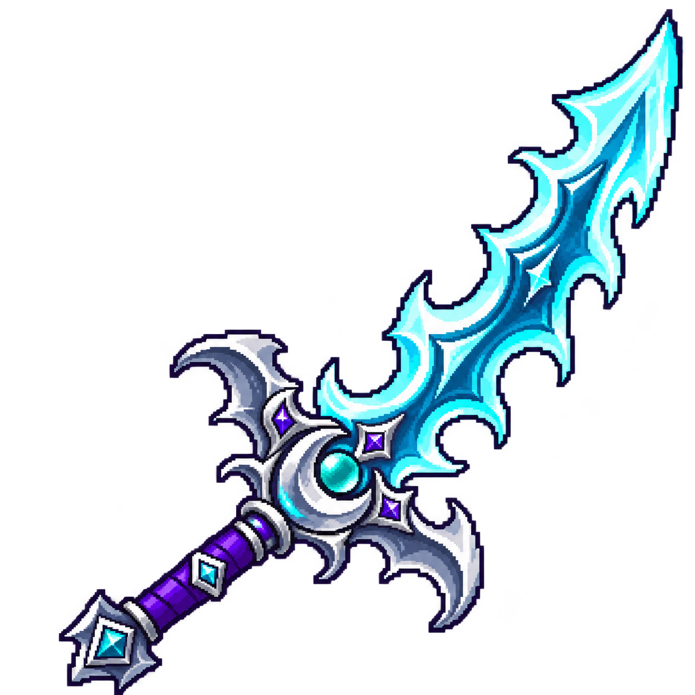 月封じの剣 | 1 | 5 | atk+7 / spd+1 | 会心率+10% | 8 + 2 / 10 | 42.735 |
月封じの剣 | 2 | 8 | atk+13 / spd+2 | 会心率+10% | 15 + 2 / 17 | 49.88 |
月封じの剣 | 3 | 10 | atk+17 / spd+3 | 会心率+10% | 20 + 2 / 22 | 54.755 |
月封じの剣 | 4 | 15 | atk+27 / spd+4 | 会心率+10% | 31 + 2 / 33 | 66.69 |
月封じの剣 | 5 | 21 | atk+37 / spd+6 | 会心率+10% | 43 + 2 / 45 | 79.06 |
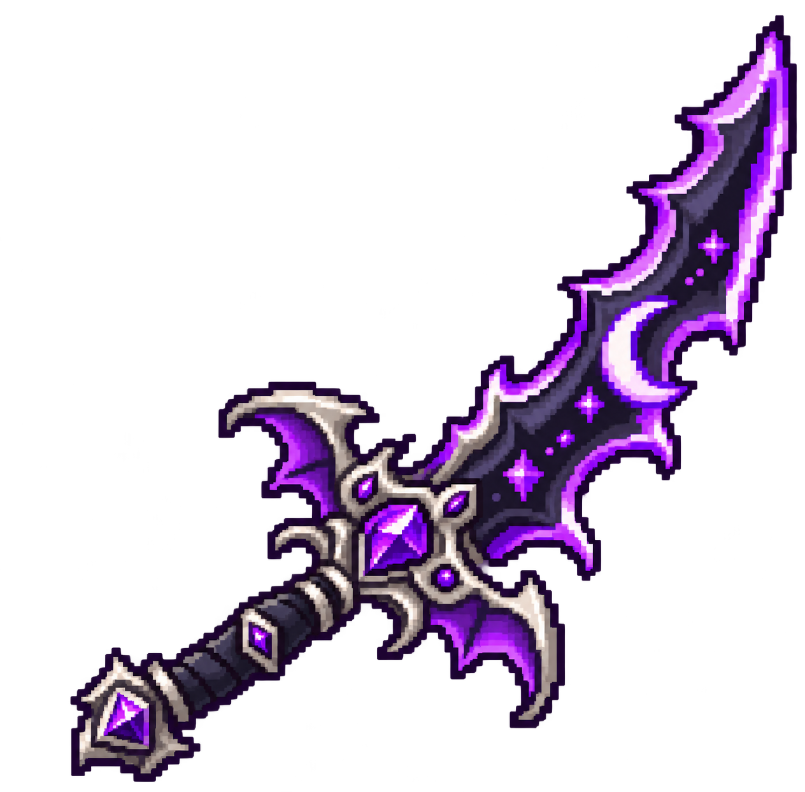 月影の短剣 | 1 | 5 | atk+8 / spd+2 | なし | 10 + 0 / 10 | 40.28 |
月影の短剣 | 2 | 8 | atk+4 / spd+1 | HP吸収15% | 5 + 12 / 17 | 35.87 |
月影の短剣 | 3 | 10 | atk+8 / spd+2 | HP吸収15% | 10 + 12 / 22 | 40.28 |
月影の短剣 | 4 | 15 | atk+17 / spd+4 | HP吸収15% | 21 + 12 / 33 | 50.29 |
月影の短剣 | 5 | 21 | atk+26 / spd+7 | HP吸収15% | 33 + 12 / 45 | 60.76 |
お菓子のサーベル | 1 | 3 | atk+4 | 会心率+10% | 4 + 2 / 6 | 39.1 |
お菓子のサーベル | 2 | 5 | atk+9 | 会心率+10% | 9 + 2 / 11 | 44.85 |
お菓子のサーベル | 3 | 6 | atk+12 | 会心率+10% | 12 + 2 / 14 | 48.3 |
お菓子のサーベル | 4 | 9 | atk+19 | 会心率+10% | 19 + 2 / 21 | 56.35 |
お菓子のサーベル | 5 | 13 | atk+27 | 会心率+10% | 27 + 2 / 29 | 65.55 |
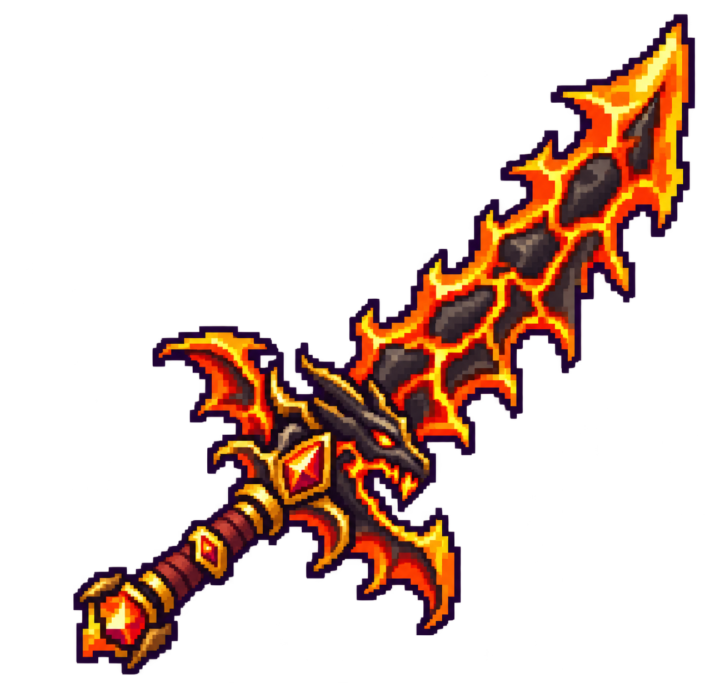 マグマの剣 | 1 | 5 | atk+3 / spd+1 | 攻撃力+15% | 4 + 6 / 10 | 43.255 |
マグマの剣 | 2 | 8 | atk+9 / spd+2 | 攻撃力+15% | 11 + 6 / 17 | 50.88 |
マグマの剣 | 3 | 10 | atk+13 / spd+3 | 攻撃力+15% | 16 + 6 / 22 | 55.38 |
マグマの剣 | 4 | 15 | atk+23 / spd+4 | 攻撃力+15% | 27 + 6 / 33 | 68.48 |
マグマの剣 | 5 | 21 | atk+33 / spd+6 | 攻撃力+15% | 39 + 6 / 45 | 81 |
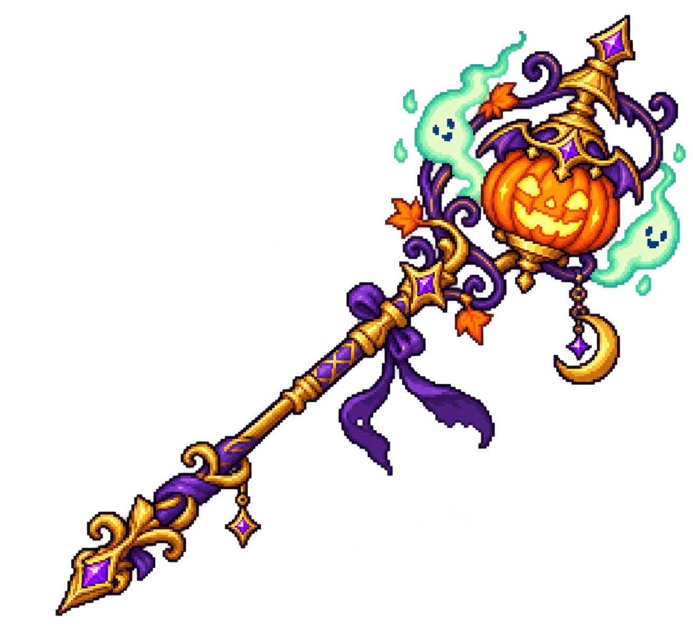 月灯りのランタン杖 | 1 | 4 | atk+6 | 消費MP−1 | 6 + 2 / 8 | 37.8 |
月灯りのランタン杖 | 2 | 6 | atk+11 | 消費MP−1 | 11 + 2 / 13 | 43.05 |
月灯りのランタン杖 | 3 | 8 | atk+16 | 消費MP−1 | 16 + 2 / 18 | 48.3 |
月灯りのランタン杖 | 4 | 12 | atk+25 | 消費MP−1 | 25 + 2 / 27 | 57.75 |
月灯りのランタン杖 | 5 | 17 | atk+35 | 消費MP−1 | 35 + 2 / 37 | 68.25 |
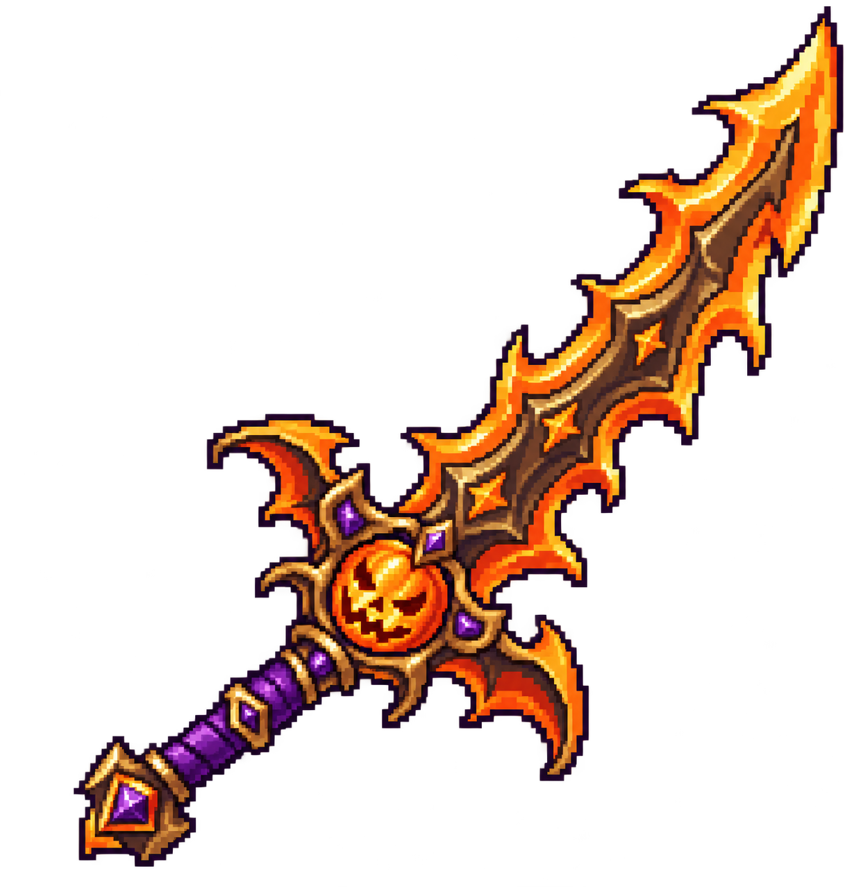 かぼちゃの魔剣 | 1 | 3 | atk+4 | 会心率+10% | 4 + 2 / 6 | 39.1 |
かぼちゃの魔剣 | 2 | 5 | atk+9 | 会心率+10% | 9 + 2 / 11 | 44.85 |
かぼちゃの魔剣 | 3 | 6 | atk+12 | 会心率+10% | 12 + 2 / 14 | 48.3 |
かぼちゃの魔剣 | 4 | 9 | atk+19 | 会心率+10% | 19 + 2 / 21 | 56.35 |
かぼちゃの魔剣 | 5 | 13 | atk+27 | 会心率+10% | 27 + 2 / 29 | 65.55 |
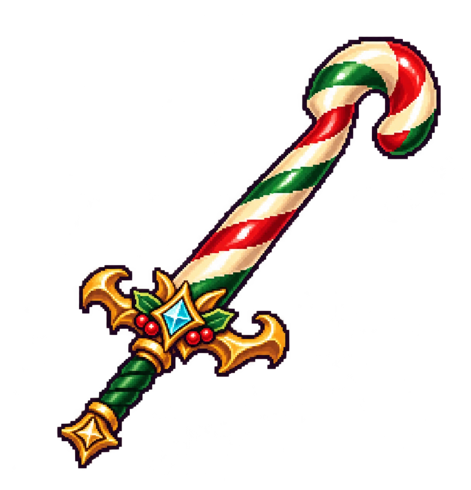 サンタのキャンディソード | 1 | 4 | atk+5 / spd+1 | 会心率+10% | 6 + 2 / 8 | 40.425 |
サンタのキャンディソード | 2 | 6 | atk+10 / spd+1 | 会心率+10% | 11 + 2 / 13 | 46.2 |
サンタのキャンディソード | 3 | 8 | atk+14 / spd+2 | 会心率+10% | 16 + 2 / 18 | 51.04 |
サンタのキャンディソード | 4 | 12 | atk+22 / spd+3 | 会心率+10% | 25 + 2 / 27 | 60.58 |
サンタのキャンディソード | 5 | 17 | atk+31 / spd+4 | 会心率+10% | 35 + 2 / 37 | 71.37 |
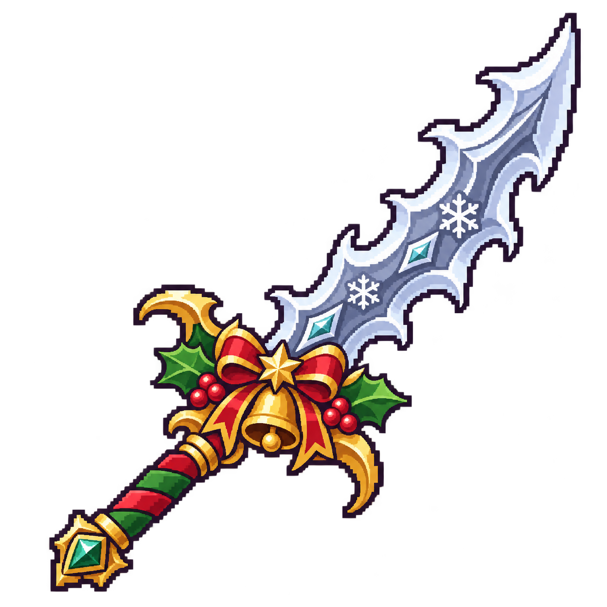 聖夜のヒイラギ氷剣 | 1 | 4 | atk+5 / spd+1 | 会心率+10% | 6 + 2 / 8 | 40.425 |
聖夜のヒイラギ氷剣 | 2 | 6 | atk+9 / spd+2 | 会心率+10% | 11 + 2 / 13 | 45.24 |
聖夜のヒイラギ氷剣 | 3 | 8 | atk+14 / spd+2 | 会心率+10% | 16 + 2 / 18 | 51.04 |
聖夜のヒイラギ氷剣 | 4 | 12 | atk+21 / spd+4 | 会心率+10% | 25 + 2 / 27 | 59.67 |
聖夜のヒイラギ氷剣 | 5 | 17 | atk+30 / spd+5 | 会心率+10% | 35 + 2 / 37 | 70.5 |
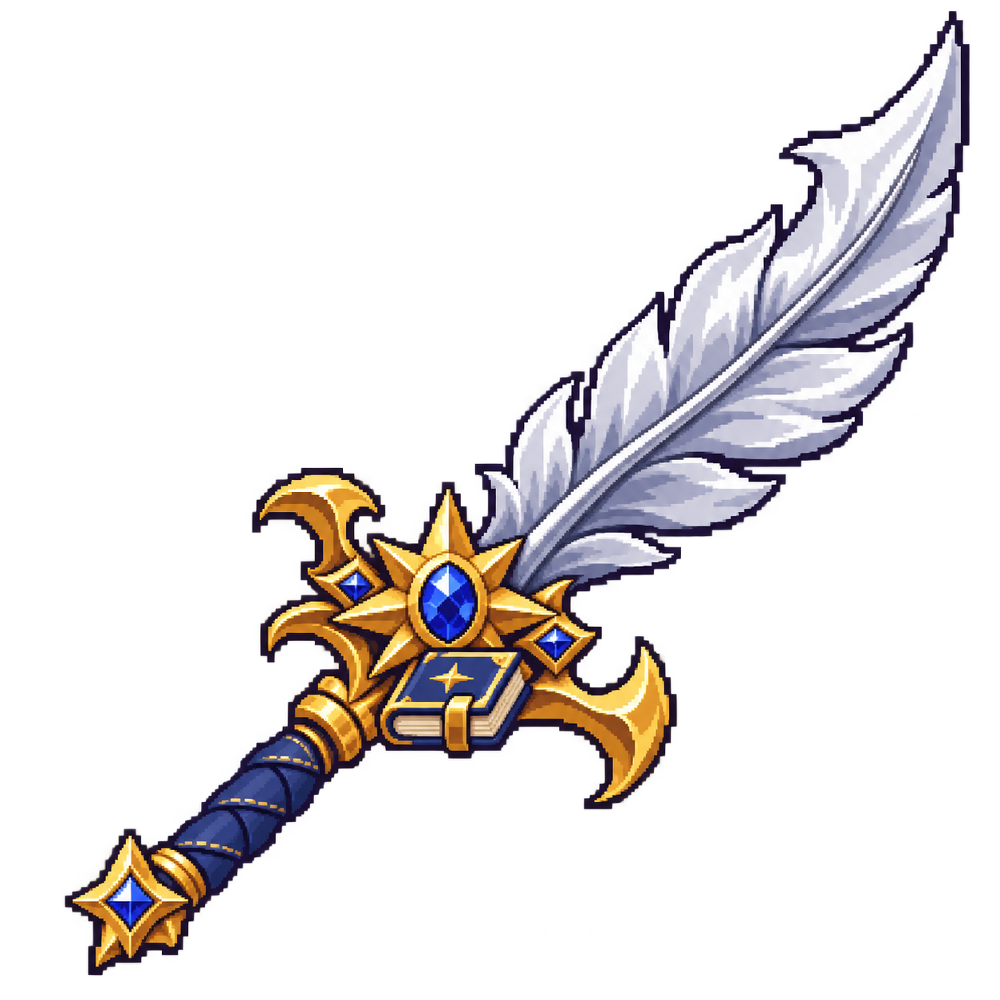 星詠みの羽根剣 | 1 | 4 | atk+5 / spd+1 | 会心率+10% | 6 + 2 / 8 | 40.425 |
星詠みの羽根剣 | 2 | 6 | atk+10 / spd+1 | 会心率+10% | 11 + 2 / 13 | 46.2 |
星詠みの羽根剣 | 3 | 8 | atk+14 / spd+2 | 会心率+10% | 16 + 2 / 18 | 51.04 |
星詠みの羽根剣 | 4 | 12 | atk+22 / spd+3 | 会心率+10% | 25 + 2 / 27 | 60.58 |
星詠みの羽根剣 | 5 | 17 | atk+31 / spd+4 | 会心率+10% | 35 + 2 / 37 | 71.37 |